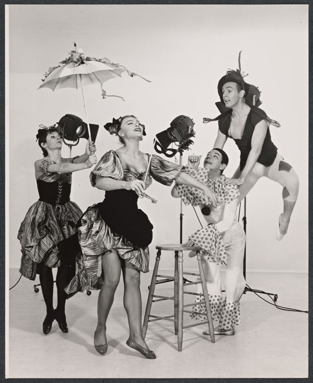
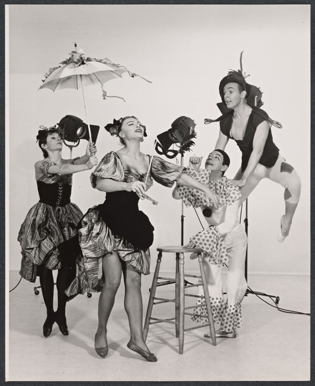
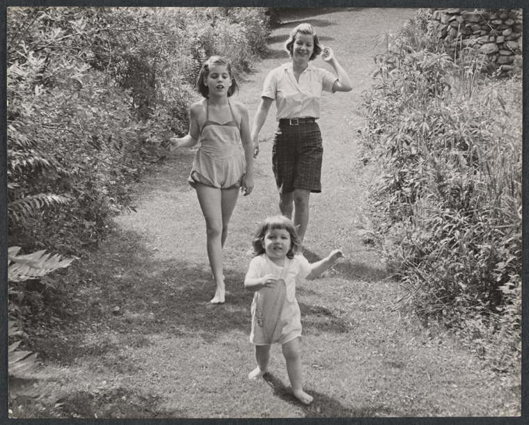
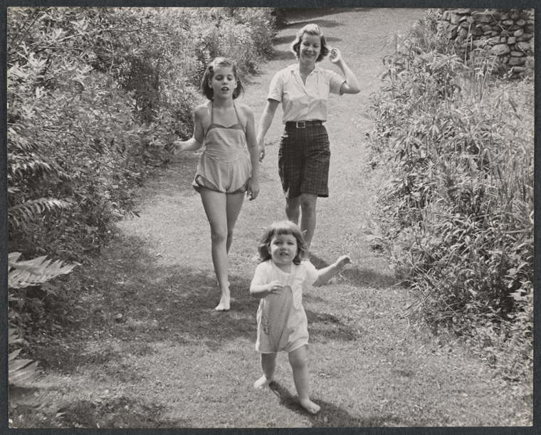

DESCRIPTION
The collection contains work from the partnership of Leo and Sy Friedman and Joseph Abeles, together the pre-eminent firm documenting Broadway theater productions in the 1950s-1970s. The Friedman-Abeles Photographs consist primarily of photographs, negatives, contact sheets, proofs, slides, and oversized prints, spanning the partnership of Leo and Sy Friedman and Joseph Abeles. While the partnership lasted from 1954-1970, the collection does contain photographs from beyond this timeline. These photographs are generally marked as being from Talbot Studio or the Joseph Abeles Collection, the former being the studio Abeles founded before his partnership with the Friedmans, and the latter his studio afterwards. Almost all of the images are in black and white, but there is a series of color negatives, transparencies, and slides. Images from theatrical productions comprise the majority of the collection, and the images cover various stages of production. Many shows have rehearsal, production, and publicity prints. Some also have images of set construction, costume design, backstage visits, and parties. The images are from Broadway and off-Broadway shows, as well as out of town engagements throughout the northeast, and various other productions in Connecticut and New Jersey. There is also a series of the firm's other work that contains images from events around New York City- luncheons, award events, and other commercial work. The collection also contains studio portraits of actors, actresses, producers, authors, and others involved in theater. The invoices and correspondence series contains paperwork related to various projects, sales, reports, bills, and more. This correspondence is mostly from the late 1970s-early 1980s, and is specific to the Joseph Abeles Collection. A large section of this series is devoted to the 1980 Broadway Musical Calendar.


 

 
